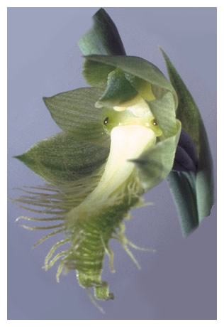
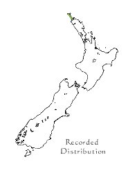

|  |
|
Calochilus herbaceus viride
Beard Orchid Plant: Terrestrial tuberous herb.
15 to 60cm high when in flower. Stem blue-green. Leaves: Single. Fleshy, long and thick. Very similar to a Sun Orchid leaf. Blue-green in colour.
Flowers: The red is absent from the lateral petal stripes and from the labellum beard. White replaces the usual violet / purple labellum disc. The green of the chloroplast's still survives in tepals, leaves and scape.
Flowering time: October.
Habitat: Ridge-top tracks through poor white residual soil overshadowed by mature Kanuka (Kunzea ericoides). Only one colony has been reported at Te Paki in the Far North.
Conservation Status: Threatened - Nationally Critical.
Notes: Structurally the plant appears to be no different from normally coloured specimens, but its rarity is notable. |
| Photo: Eric Scanlen |
| Beard Orchids |